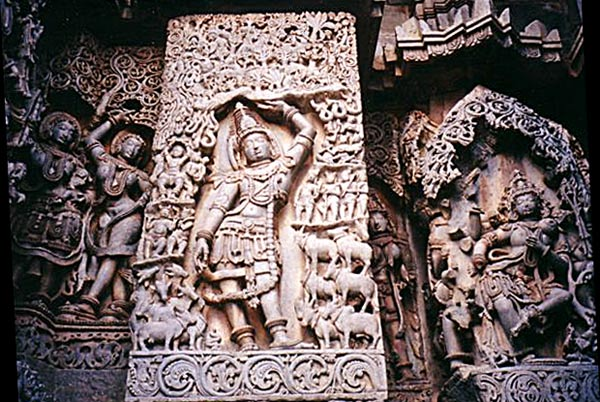

in partnership with krishna.com and bbt.info
Home · News · About · Worldwide · Culture · ICJ · Education · Site Info

Temple carving, Belur, Karnataka < Previous Next >
Return to Govardhana-puja main page